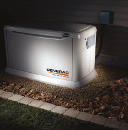
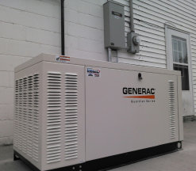
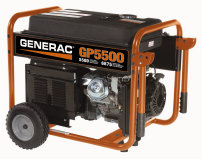
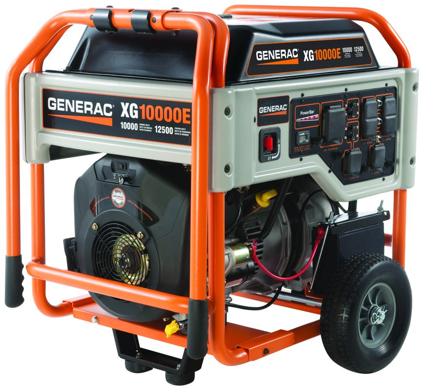
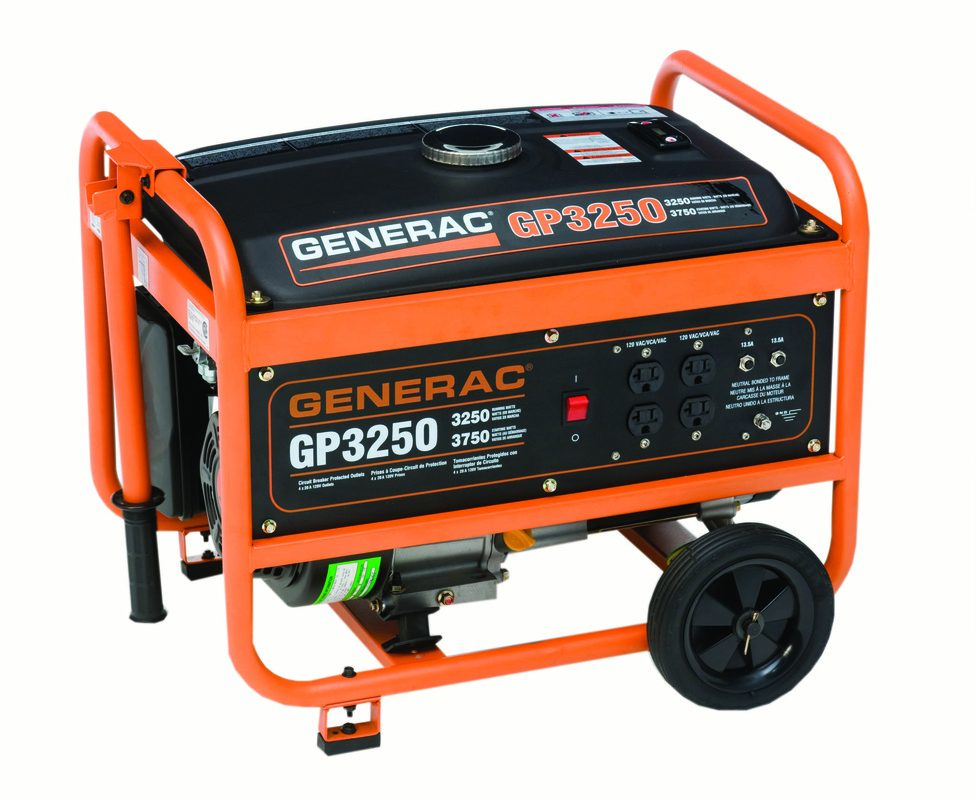

GENERAC GENERATORS
Don’t let an outage
stop you.
Standby power for the unexpected. Get a Generac generator installed by Lohrum Electrical, your one-stop, turn-key provider.
 LOHRUM ELECTRICAL LLC
LOHRUM ELECTRICAL LLC A COMPLETE GENERATOR SOLUTION
One provider.
Power you can plan for.
Get a standby Generac generator installed by Lohrum Electrical. We are a one-stop shop and turn-key provider, with a focus on your satisfaction and saving you money in the end.
The website describes Lohrum Electrical as “the best in the business” and the “#1 Generac Installer in all of Southeastern Indiana.”
BACKUP POWER, INSTALLED
Generac in the field.
Standby installations and portable generators
from the project collection.











GENERAC SALES & SERVICE
Sales. Service.
Standby protection.
Lohrum Electrical is an authorized sales and service dealer offering automatic 24/7 power protection.
Avoid the Yearly Fees! First 8 Hour Break in Service is FREE! Contact Lohrum Electrical to discuss the promotion and your installation.
YOUR NEXT STEP